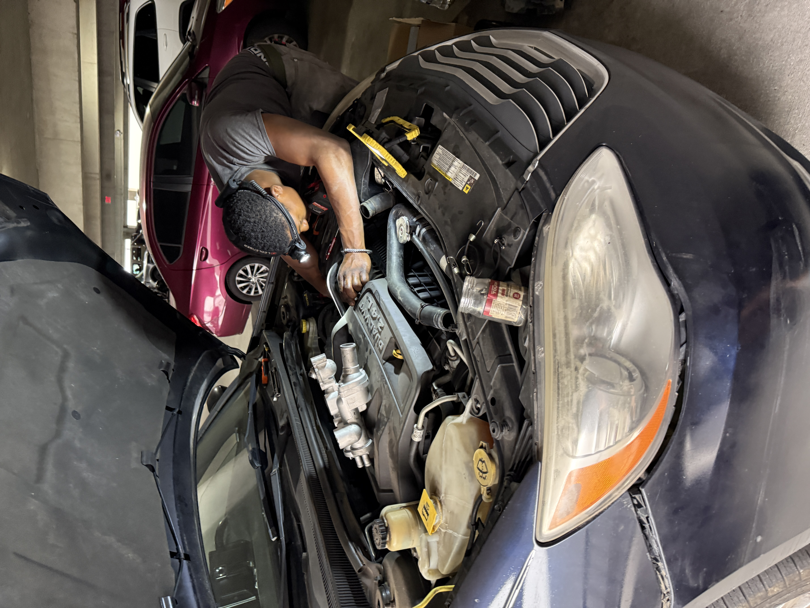
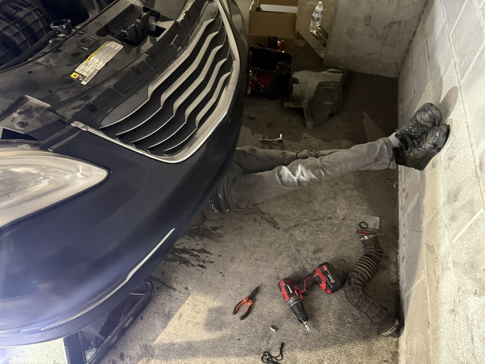
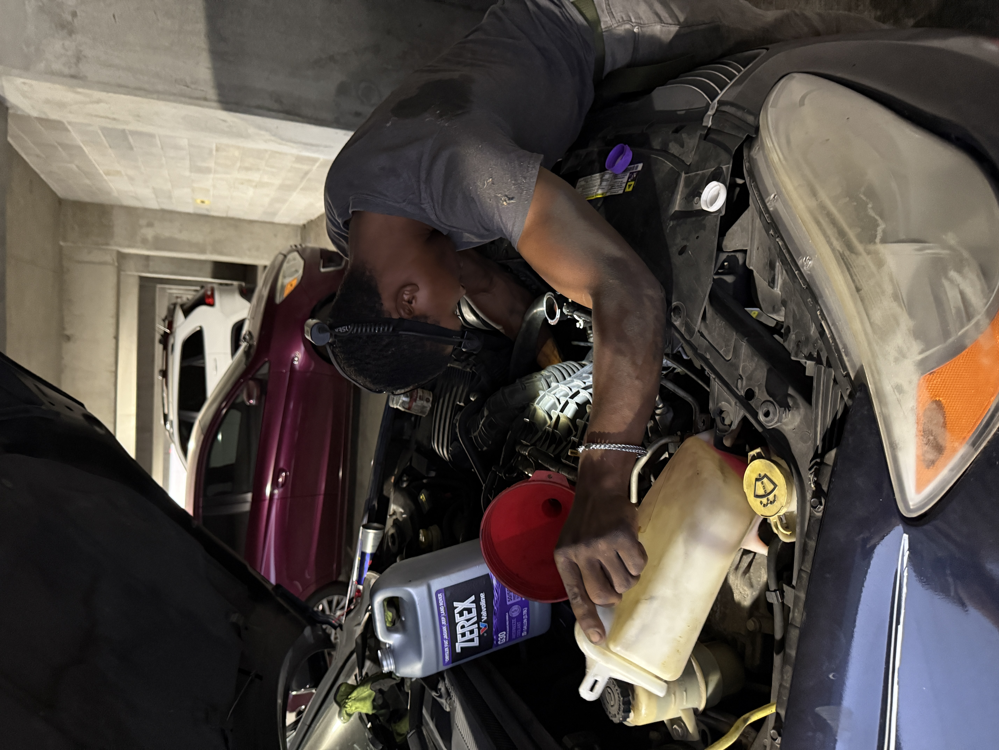

Fast response for breakdowns, no-start issues, and urgent on-site help.
Mobile mechanic serving the greater Nashville area
Fast mobile auto repair and late-night roadside help when you need it most.
Garrett brings the tools, the experience, and the urgency. From diagnostics and on-site repairs to emergency roadside assistance, he helps drivers across Nashville, Antioch, Murfreesboro, Franklin, Brentwood, Smyrna, and La Vergne get back on the road.
8 years of experience
Emergency roadside help available late night
Nashville-area arrival often within 45-60 minutes
$3 / mile
Roadside help pricing
$50-$75
Oil change starting range
7 cities
Core service area coverage
Best contact method: website message first, phone second, text only if needed.

Honest pricing
Roadside help at $3 per mile
Mobile troubleshooting and repair work without making you tow the car first.
Clear communication, negotiable quotes, and help finding the best parts prices.
Services
Real help for real car problems, wherever your car is parked.
Garrett handles urgent roadside situations and everyday repair work with the same careful, hands-on approach.
Late-night roadside assistance
Emergency help around Nashville when your car leaves you stranded. Roadside assistance is priced at $3 per mile, with many Nashville-area calls reached in about 45-60 minutes.
Mobile diagnostics
Warning lights, no-start conditions, battery issues, cooling system concerns, and hard-to-track problems diagnosed on-site.
Mobile repairs
On-site repair work for common failures so you can avoid a tow whenever possible.
Oil change service
Oil changes start at $50-$75 and include full synthetic oil, a quality oil filter, and purchase records when needed.
Cooling system work
Thermostat housing replacement, coolant flushes, bleeding air from the system, and careful follow-through to make sure the fix is done right.
Parts sourcing support
If a job needs parts, Garrett can help source them and tries to find the most affordable option available.
Why drivers call Garrett
Built for stressful moments when you need someone reliable, not a guess.
- 8 years of repair experience
- Independent mobile mechanic who comes to you
- Emergency roadside help available late night
- Fair pricing that is discussed clearly up front
- Strong attention to detail and follow-through
- Helps customers save money on parts when possible
Service area
Serving the greater Nashville area
Nashville
Antioch
Murfreesboro
Franklin
Brentwood
Smyrna
La Vergne
Visit Facebook Page
Reviews
Customer feedback and real repair work.
The review section is built as a scrolling carousel so more customer stories can be added over time without changing the layout.

★★★★★
Thorough, fair, and seriously helpful
Garrett replaced the thermostat housing on my Chrysler 200, flushed the cooling system, worked the air out of the system, fixed smaller issues along the way, and diagnosed a battery light problem. He worked for about 5.5 hours and only charged $245. The price was extremely fair and he was careful the entire time.

★★★★★
Showed up ready to work
Needed someone who could come out fast and actually diagnose the problem instead of guessing. Garrett was professional, explained things clearly, and got right to it.

★★★★★
Great option when you cannot tow the car
Super convenient having the repair done on-site. Honest communication, no pressure, and the work felt solid from start to finish.

★★★★★
Reliable help when the car cannot wait
The kind of mechanic you want when a warning light comes on and you need help quickly. Fast response, fair price, and very respectful to deal with.
Gallery
Real on-site work, real tools, real repairs.
Contact
Send a message first for the best response.
Garrett prefers website messages because they are easier to organize and forward by email. Calling is the next best option. Texting should only be used when necessary.